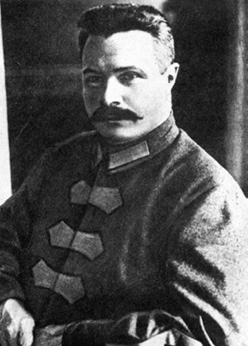

Anıttaki Gizli Rus
Bolşevik devriminin iki önemli generaline ait heykellerin Taksim Cumhuriyet Anıtı’nda, hem de hemen Atatürk, Fevzi Çakmak ve İsmet İnönü’den sonra geldiklerini biliyor muydunuz?
Maçı kazanan üç büyüklerin taraftarı sevincini Taksim’e taşır, “Kıbrıs Verilemez” diyenler soluğu burada alır, işçiler burada zam ister, siyasiler burada nutuk atar. Taksim meydanı, resmi ve gayr-i resmi ilgiye mazhar olmuş bir yer. Cumhuriyet Bayramı gibi milli günler için Taksim meydanı ve Taksim Cumhuriyet Anıtı ilk durak olur çoğu zaman.
Cumhuriyet Anıtı, Taksim meydanına anlam veren yegane tarihi dekor olarak meydanla bütünleşmiştir. Taksim’deki büyük nümayişlerle de iç içe; toplumsal olaylarda Cumhuriyet Anıtına tırmanmış insan görüntüleri her an ajanslara düşebilir. Burada şipşak fotoğrafçılar hiç eksik olmaz, yeni-eski ziyaretçiler Cumhuriyet heykeli fonunda fotoğraf çektirmeyi ihmal etmezler... Ve “insan seli” tabiri buraya yakışır.
Peki bütün törenlere, mitinglere ev sahipliği yapan, Türkiye’nin en işlek, en kalabalık meydanı, onca ‘ortalıktalığına’ rağmen bizden bir şey saklıyor olabilir mi? Ya da soruyu daha özelleştirerek sorarsak yanından gelip geçerken Taksim Cumhuriyet Anıtına hiç dikkatlice baktınız mı? “Tabii ki..” ya da “Niye dikkatlice bakalım ki!” sözleri sorunun muhtemel cevapları olur. Peki, Bolşevik Ekim devriminin iki önemli generaline ait heykellerin Taksim Cumhuriyet Anıtında, hem de hemen Atatürk, Fevzi Çakmak ve İsmet İnönü’den sonra geldiklerini söylersek...
Taksim Cumhuriyet Anıtı’nda önde yer alan Mustafa Kemal Atatürk, İsmet İnönü ve Fevzi Çakmak’ın hemen arkasında iki Rus generali dikkat çekiyor; Frunze ve Voroşilov
Bu bilgi, tarih kitaplarında ve büyük ansiklopedilerin ilgili maddelerinde pek yer almıyor tahmin edilebileceği gibi. 8 ciltlik İstanbul Ansiklopedisi”ne bakıldığında bazı mimari bilgilerden sonra, anıtın Sıraselviler tarafındaki Cumhuriyeti sembolize eden figürleri anlatırken Atatürk, İsmet İnönü ve Fevzi Çakmak’ın isimleri anılıyor. Diğer kaynaklar ve ansiklopediler heykelin daha çok mali ve sanatsal yönüne değiniyor, bahsini ettiğimiz figürlerden gayri, kimliklere dair pek ayrıntı vermiyor. Halbuki Beyoğlu yönündeki Atatürk’ün en önde olduğu toplulukta yüzü teşhis edilebilen en az on insan figürü yer alıyor. Atatürk, İsmet inönü, Fevzi Çakmak. Furunze Voroşilov... Belki de Tevfık Rüşdü Aras...
Furunze, Kızılordu’nun teorisyenlerinden ve Bolşevik Rusya’nın önemli insanı. Kurtuluş Savaşı’nın sürdüğü sıralarda, 1921’lerde, Anadolu’nun neredeyse her yerini adım adım dolaşmış, Bolşevik Rusya’nın desteğini göstermiş ve bu arada Anadolu halkının Ekim devrimine karşı tutumunu gözlemlemiş. İlber Ortaylı’nın deyimiyle fevkalade bilgili ve antikite bilgisine sahip bir kişi Furunze. Türkiye ile ilgili izlenimlerini Ankara Yolculuğu Konusunda Rapor ve Ankara Yolculuğu kitabında toplamış. Doğan Kitap’tan çıkan Abdula Mardanoviç Samsutdinov’un “Mondros’dan Lozan’a Türkiye Ulusal Kurtuluş Savaşı Tarihi: 1918-1923” adlı kitap bu yakınlaşmayı anlatması ve bu dönemki Türk-Rus ilişkilerini okumak bakımından ilginç anektodlar içeriyor. Kitapta, Atatürk’ün ya da Cumhuriyet’in önde gelenlerinin Sovyet Rusya ile sıcak ilişkiler kurdukları anlatılıyor. Zaten Moskova Antlaşması da bu ilişkilerin yoğun olarak yaşandığı 1921’de yapılıyor.
İtalyan Heykeltıraş Canonica tarafından yapılan heykelin açılışı dönemin gazetelerine de yansımıştı.
K. Yefremoviç Voroşilov ise Kızılordu’nun önde gelen generallerinden. Daha önceleri Türkiye’ye gelmekle beraber Cumhuriyet’in onuncu yıl kutlamalarına katılıyor ve fotoğraflardan bu törenlerde Atatürk’ün yakınında yer aldığı görülüyor. Bu dönem Sovyet Rusya Türkiye’nin müttefikidir. 1921’de Moskova anlaşmasıyla yoğunlaşan ilişkiler giderek ilerler. Furunze ve Voroşilov’un maddi ve manevi destekleri her zaman devam eder. Somut bir örnek olarak 1927’de Sovyetlerden gelen pek çok tank, top gibi ağır silahların Tophane Limanı’ndan Türkiye’ye giriş yapmış olması verilebilir. Özetle Cumhuriyet’in ilk dönemlerindeki Türk-Rus ilişkilerinin Taksim meydanındaki anıt kadar gizemli olduğu söylenebilir.

Furunze, antikite bilgisi yüksek bir general
Türkiye’deki heykelcilik faaliyetleri Osmanlı’nın son dönemlerine rastlamakla beraber heykel yapanların işinde yetkin kişiler olduğu söylenemez, zaten sayıları da çok az. Dolayısıyla heykel yapımı daha çok Cumhuriyet dönemine rastlıyor Taksim Cumhuriyet Anıtı da Türkiye’nin ilk anıtı olmasa bile, adı ilklerin arasında geçiyor. Taksim Anıtı 1925 yılında ısmarlanmış ancak 1928 yılında tamamlanabilmiş. Daha harf devrimi ilan edilmediği için Cumhuriyet gazetesindeki anıtın açıldığına dair verilen haber Osmanlıca. Mustafa Armağan, anıtın büyük bir havuz içinde; iki yanını çevreleyen çeşmelerden akan suyun büyük havuza dökülecek şekilde tasarlandığını ve maddi zorluklar yüzünden bunun gerçekleştirilemediğini söylüyor. Anıtın o günkü maliyeti ise 140.000 TL. Çetin Altan’a göre Türkiye’de pek çok şey gibi heykeltıraşlık gelişmemiş, dolayısıyle İtalyan bir heykeltıraşa ısmarlanmış; fakat o da aslında birinci sınıf heykeltıraş değilmiş.
Heykeltıraş casus mu?
Taksim heykeli İtalyan heykeltıraş P. Canonica tarafından yapılır. Taksim Anıtı Canonica’nın Türkiye’de yaptığı tek çalışma değil; İzmir’de yaptığı bir heykel ve Ankara’da biri Zafer meydanında diğeri Etnografya Müzesinin önündeki tunçtan yapılmış iki Atatürk heykeli Canonica’ya ait. Canonica’nın bir süre heykeltraslık yaptıktan sonra resim ve müzikle yakından ilgilendiği, 1929’da İtalya Akademisi’ne üye olduğu, 1950’de de İtalya Parlamentosuna hayat boyunca senatör seçildiği biliniyor. Türkiye’nin önde gelen sanat tarihçilerinden Semavi Eyice “Atatürk ve Pietro Canonica” adlı eserinde hem heykeltıraştan hem de Atatürk’le olan ilişkilerinden bahsediyor. Konuyla ilgili kendisiyle görüştüğümüz Semavi Eyice Canonica’nın Mussolini’ye çok yakın olduğunu hatta Türkiye dönüşünde Mussolini’ye verilmek üzere bir rapor kaleme aldığını söylüyor. Eyice, bu raporu kitabına eklemiş. Canonica, raporda Atatürk’ten övgüyle söz ediyor. Pietro Canonica çok dolaşan bir sanatçı, benzerleri gibi dolaştığı bölgeler hakkında rapor yazarak kendi resmi makamlarını bilgilendirmeyi ihmal etmiyor, yani Türkiye hakkında Mussolini’ye rapor yazıyor. Yazılanların seyahat notları niteliğinde olmaması, sanatçı kimliği yanında başka kimliklerini de tartışmaya açıyor. Burada en kolay şey, Canonica için casus, muhbir, hatta hatta Mussolini ile yakınlığından dolayı “faşist” demek. Böylesi “sıfatlar kullanmanın ne kadar zor olduğu da bilinir. Hem bizim üzerinde durduğumuz konu heykeltıraşın kimliği değil.
Semavi Eyice’ye heykeldeki figürlerin kimlikleri hakkında bilgisi olup olmadığını sorduğumuzda çalışmalarında buna dikkat etmediğini ve dolayısıyla bilemeyeceğini ifade ediyor.
Varoşilov, Türkiye Cumhuriyeti’nin 10. yıl kutlamalarında Atatürk’le beraber.
Neden unutuldu
Murathan Mungan “Üç Aynalı Oda”da, bir kasiyer profili çizer. Hep orta yer dededir fakat sorsanız “kasiyer kimdir” diye, kimse onu hatırlamaz. Taksim Cumhuriyet Anıtı da biraz böyle; fazlasıyla göz önünde ve belki bu yüzden gizli, bilinmez. Taksim Anıtında “saklı” iki Rus generalin öyküsü ise biraz farklı.
Yaptıkları yardımlara karşılık kadirşinaslık örneği olarak Furunze ve Voroşilov’un figürleri Cumhuriyet Anıtına konulmuştur konulmasına ama bu iki ‘yabancı’ figür, gelişen siyasi ve konjonktürel yapıdan dolayı olsa gerek unutulmaya yüz tutar. Şöyle ki, 1921’de yapılan Moskova Antlaşması yirmi yıllık bir anlaşma olup zamanı dolduğunda tarafların anlaşmasıyla yenilenebilecektir. Çetin Altan’a göre 1941’de Türkiye ABD ile sıcak ilişkiler içerisindedir. Dolayısıyle 2. Dünya Savaşı’nda SSCB’nin yanında yer almaz ve Sovyet Rusya da Moskova antlaşmasını yenilemek istemez. Yani Türk-Rus ilişkileri tam anlamıyla bozulur. İlber Ortaylı’ya göre Stalin’den kaynaklanan Moskova Anlaşmasının feshi, Türk-Rus ilişkilerinin ‘kötü’ bir şekilde kopmasına ve maalesef bir daha düzelememesine yol açmış. Dolayısıyle Türkiye ile Sovyet Rusya’sı arasında “soğuk savaş” başlar ve Taksim Cumhuriyet Anıtındaki iki Rus generali de unutulur.
Şimdiye kadar anlatılanların bir kısmını önceden biliyor olmanız mümkün. Çünkü bizden önce konuyu dile getiren birkaç yazı ve birkaç yazar var. Taksim’deki iki Rus generalinden ilk bahseden kişi Çetin Altan. Nebil Özgentürk ve Mustafa Armağan da bu konudaki yazılarına referans olarak Çetin Altan’ı göstermişler.
Taksim Meydanı’nda yer alan Cumhuriyet Anıtı yerli ve yabancı ziyaretçilerin doğal buluşma alanı bugün. Anıttı yer alan iki Rus general Cumhuriyet’in kuruluş yıllarında Sovyet Rusya’sıyla kurulan ilişkinin bir yansıması.
Nebil Özgentürk’ün araştırmasına göre adı geçen Rus generallerin anıta konulması bizzat Mustafa Kemal’in isteği ile olmuş. Heykeltıraş Canonica’nin Atatürk’e olan yakınlığı bu düşünceyi destekliyor. Burada iki soru sorulabilir. Sovyet generallerinin Cumhuriyet Anıtında yer almaları nasıl açıklanabilir? Ve “Anıtta iki Rus generalinin de olduğu niye açıklanmıyor?” Birinci sorunun cevabı olsa olsa kadirşinaslık ve o günkü konjonktürel durum olacaktır. Ancak ikinci soruya cevap bulmak güç. Taksim Anıtı, insanların yaşadıkları şehirlere karşı yabancılaşmalarına gösterilebilecek bir örnek sadece, konuştuğumuz tarihçi ve araştırmacılar tarihi gerçeklerin “önemsiz” kabul edilse bile bilinmesinin zararı olmayacağı konusunda hemfikir. Üstelik tarihi gerçeklerin bir gün ortaya çıkma gibi bir huyu var.
İstanbul’da yaşayan insanlar için “saklı” kalan bir yığın eser var elbette. Yüzyılllardan süzülüp gelen tarihi eserlerin ne varlığını ne de anlamını kavrayabiliyoruz. Yani tarihi eserlere olan lakaytlığımız yerleşik bir hal kazanmış sanki. İlber Ortaylı’ya konuyu aktardığımızda şu sözleri işitiyoruz: “Bu laubaliliktir. Biri yapıyor unutuluyor gidiyor; doğru dürüst ne kaydediliyor, ne rehber çıkarılıyor. İnsan, böyle bir heykelin yazısını yazar, broşürünü çıkarır, yayınlar...”
Çetin Altan, Nebil Özgentürk ve Mustafa Armağan’ın Taksim Anıtı’nın gizli tarihine ortak tepkisi, “Tarih de şeffaflaşmalı.” şeklinde
Belki bu anıtın gerçek öyküsünü bilen vesika sahibi kişiler ya da kurumlar vardır da bizleri bilgilendirirler diye ümit ediyoruz.
Aksiyon 270. sayı